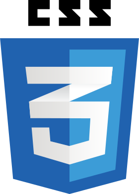
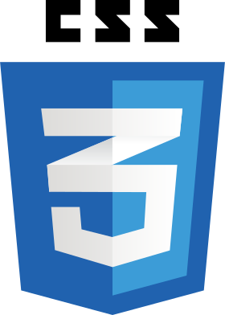

Melvin Tan
ThoughtWorks JumpStart Trainee
Aspiring Full Stack Developer
Based in Singapore
Curious and Consistently Improving
Hi there! I'm Melvin and I have recently graduated from the JumpStart course at ThoughtWorks Singapore. The course teaches us JavaScript and its frameworks such as ReactJs, NodeJs and ExpressJs. More importantly, we are inculcated with agile practices including test driven development and pair programming
Previously I was an Account Manager at Creitive Digital Agency where I was managing several projects on web and mobile applications. I also got to work on SEO projects as well as facilitate design thinking workshops with corporate clients.
Thereafter I worked as a Research Assistant at the Singapore University of Technology and Design where I had to develop product requirements and design the Future Mobility Sensing web and mobile applications used for transportation research in Singapore.
I want to have a broad based understanding and skillset of technology, aspiring to be a fullstack developer.
In my free time I play the violin, work out at the gym and watch stand up comedies in town.
Languages
 



JavaScript Frameworks / Libraries


Databases

ThoughtWorks JumpStart Projects
Individual Project
As there is nothing more persuasive about the wonders of compound interest than a visual of an exponential chart, I decided to develop a retirement planner that displays your savings with and without investing at a set rate of return on investments. It also displays mutual funds which 5 year annualized returns exceed your chosen rate of returns.
Achieved a unit/integration test coverage of 94% for backend with automated testing with Jest and React Testing Library. End to end automated testing was written with Cypress.
Front end was developed with React and the backend was developed with NodeJs, ExpressJs and MongoDB
Built over 2 weeks in September 2019
Front end
Back end
Live
Team project
As the HR team in ThoughtWorks used Excel to keep track of overseas ThoughtWorkers on secondment in Singapore and Thailand offices, we were tasked to continue on a legacy codebase to develop an internal tool that the HR and finance team could use to improve their productivity.
I worked in a team of 6 with a daily rotation of pairing partners. I worked across various roles such as developer, Business Analyst and Quality Analyst.
As a developer I worked in a pair to deliver user stories with test driven development. As a Business Analyst I prepared User Stories and its Acceptance Criteria, presenting the features implemented at end of each Sprint with a showcase with the Product Owner from HR. As a Quality Analyst I checked the quality of the unit, integration and end to end tests.
Front end was developed with React and the backend was developed with NodeJs, ExpressJs and MongoDB
Delivered over 3 weekly sprints in November 2019
Front end
Back end
Demo
Self Initiated Personal Projects
Android App
During my own time I learnt Java and applied what I have learnt by building a simple android app, learning XML in the process. I also had to learn how to effectively use Android Studio and the Gradle Build Tool to ensure that my app can run on an android phone.
This multiscreen app uses View Pagers to allow users to navigate through different screens on the app and view information about tourist locations relating to the history, culture, cuisine and events in Singapore.
Developed in XML and Java
Built in Android Studio
Github